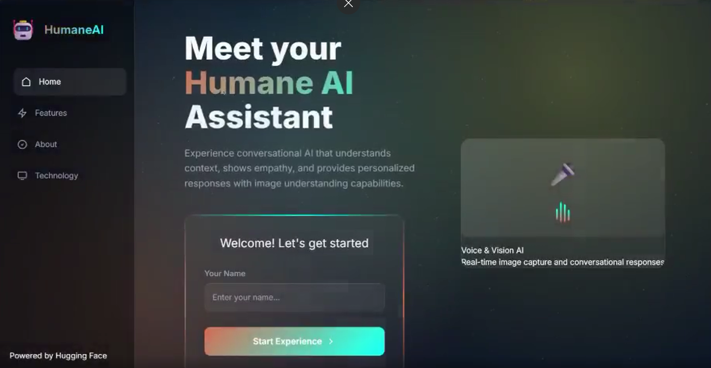
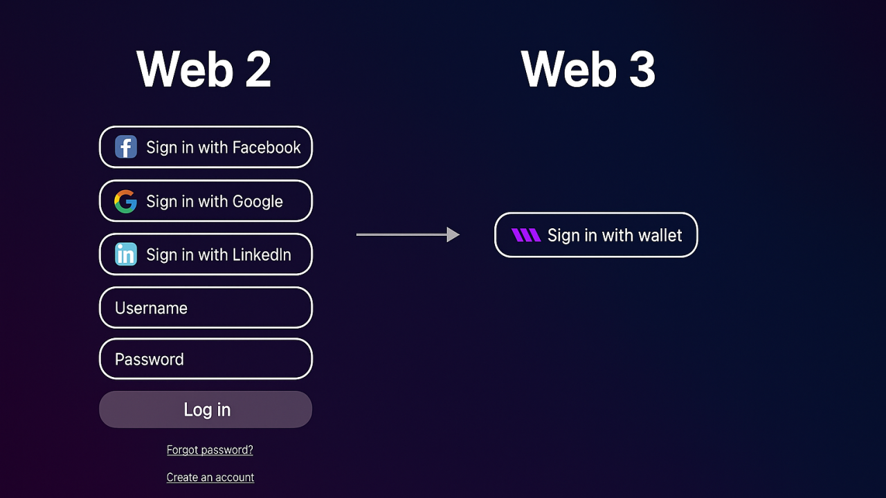

AI/ML Systems
Model-powered applications that combine data, embeddings, retrieval, agents, evaluation, and deployment into usable products.
Pune, India / Building practical intelligence
I am Indrajeet Badhel, a Computer Science student focused on machine learning systems, RAG applications, AI agents, multimodal AI, model-powered automation, and competitive programming discipline.
indrajeet@lab:~/portfolio
$ current_focus --stack Python ML RAG Agents Vision LLMs DSA
$ build_mode --goal models that become useful products
Operating map
Model-powered applications that combine data, embeddings, retrieval, agents, evaluation, and deployment into usable products.
Embeddings, anomaly detection, computer vision, and model-powered features connected to real interfaces.
Upload scanning, Linux fundamentals, logs, ClamAV workflows, and monitoring habits from a defender mindset.
Daily reps in data structures, algorithms, patterns, and problem solving speed.
About
Passionate about Artificial Intelligence, Machine Learning, agents, RAG, multimodal systems, and robotics. I like AI projects that move beyond demos: clear data flow, evaluation, useful interfaces, and enough engineering discipline to be trusted. I am currently pursuing B.Tech in Computer Science with AI/Data Science focus while building projects and strengthening DSA.
Selected Work
Lab timeline
Practice
GitHub, LeetCode, Codeforces, CSES, and AtCoder links stay editable in one place.
Experience
Robotics workshops, ROS implementations, and peer mentoring around intelligent automation.
Events focused on cloud, AI, and coding. Assisted hands-on sessions for beginner AI learners.
Android work with Java, coding competitions, and mentoring sessions.
Education
Pune Institute of Computer Technology. Coursework: DSA, ML, Deep Learning, Databases, Cloud Computing.
STEM background, programming exposure, debate competition winner, and technical curiosity.
Stack
Writing
Hardcode these cards whenever you publish a new post or video.
Signals, recommendation systems, and the strange feeling that apps read your mind.
Notes on discipline when motivation becomes unreliable.

A build note about making human-AI interaction feel more natural.

Why identity changes when platforms stop being the only center.
Achievements
Interests
Connect
I am open to AI/ML engineering, RAG, agents, computer vision, security-aware automation, and student builder conversations.